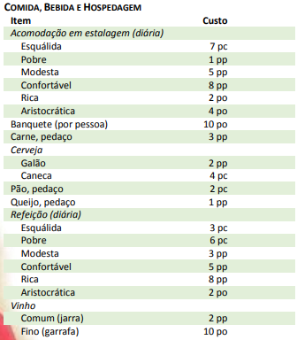
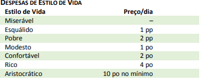
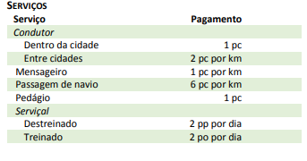

A tabela Comida, Bebida e Hospedagem mostra os preços para itens alimentícios individuais e hospedagem para uma única noite. Estes preços estão incluídos em suas despesas totais de estilo de vida.
DESPESAS
Quando não está descendo para as profundezas da terra, explorando ruínas repletas de tesouros perdidos ou entrando em guerra contra a escuridão invasora, os aventureiros enfrentam realidades mais mundanas.
Mesmo em um mundo fantástico, as pessoas precisam satisfazer necessidades básicas, como abrigo, alimento e roupas. Essas coisas custam dinheiro, embora alguns estilos de vida custem mais do que outros.
DESPESAS DE ESTILO DE VIDA
As despesas de estilo de vida fornecem uma maneira simples de explicar o custo de vida em um mundo de fantasia. O estilo de vida cobre as acomodações, comida, bebida e todas as outras necessidades dos personagens. Além disso, as despesas cobrem o custo de manutenção do equipamento para que o personagem possa estar pronto quando as próximas aventuras começarem.
No início de cada semana ou mês (à sua escolha), determine um estilo de vida a partir da tabela Despesas de Estilo de Vida e pague o preço para sustentar esse estilo de vida. Os preços indicados são por dia, então se você deseja calcular o custo de seu estilo de vida escolhido por um período de trinta dias, multiplique o preço listado por 30. O estilo de vida pode mudar de um período para o outro, com base nos recursos que você tem à sua disposição, ou mantenha o mesmo estilo de vida ao longo da carreira do seu personagem.
A escolha do estilo de vida do personagem pode ter consequências. Manter um estilo de vida rico pode ajudá-lo a fazer contatos com os ricos e poderosos, mas o personagem corre o risco de atrair ladrões. Da mesma forma, viver de forma desleixada pode ajudar a evitar os criminosos, mas é improvável que você faça conexões poderosas.
Descrições de acomodações
Miserável. Você vive em condições desumanas. Sem lugar para chamar de lar, você se abriga onde quer que possa, esgueirando-se em celeiros, aconchegando-se em caixas velhas e contando com as boas graças de pessoas melhores do que ele. Um estilo de vida miserável apresenta perigos abundantes. A violência, as doenças e a fome o seguem aonde quer que você vá. Outras pessoas miseráveis cobiçam sua armadura, armas e equipamentos de aventureiro, que representam uma fortuna para seus padrões. Você está abaixo da maioria das pessoas.
Esquálido.Você vive em um estábulo com goteiras, uma cabana com piso enlameado fora da cidade ou em uma pensão infestada de vermes na pior parte da cidade. Você tem abrigo dos elementos, mas vive em um ambiente de desespero e muitas vezes violento, em lugares repletos de doenças, fome e desgraça. Você está abaixo da maioria das pessoas e tem poucas proteções legais. A maioria das pessoas nesse nível de vida sofreu um terrível contratempo. Eles podem ser perturbados, marcados como exilados ou sofrem de alguma doença.
Pobre.Um estilo de vida pobre significa sobreviver sem os confortos disponíveis em uma comunidade estável. Comida e alojamentos simples, roupas surradas e condições imprevisíveis são suficientes, embora provavelmente seja uma experiência desagradável. Suas acomodações podem ser um quarto em um cortiço ou na sala comum acima de uma taverna. Você se beneficia de algumas proteções legais, mas ainda tem de lidar com a violência, o crime e a doença. As pessoas nesse nível de vida tendem a ser trabalhadores não qualificados, vendedores de rua, traficantes, ladrões, mercenários e outros tipos de má reputação.
Modesto. Um estilo de vida modesto o mantém fora das favelas e garante a manutenção de seu equipamento. Você vive em uma parte mais antiga da cidade, aluga um quarto em uma pensão, estalagem ou templo. Você não passa fome ou sede, e suas condições de vida são limpas, embora simples. As pessoas comuns que vivem estilos de vida modestos incluem soldados com suas famílias, trabalhadores, estudantes, sacerdotes, alguns magos e afins.
Confortável.. A escolha de um estilo de vida confortável significa que você pode pagar a roupa mais agradável e pode facilmente manter o seu equipamento. Você mora em uma pequena casa de campo em um bairro de classe média ou em uma sala privada em uma bela hospedaria. O estilo de vida confortável está associado a mercadores, comerciantes qualificados e oficiais militares.
Rico. A escolha de um estilo de vida rico significa ter uma vida de luxo, mas você pode não ter alcançado esse status social através de heranças da nobreza ou realeza. Você vive um estilo de vida comparável ao de um comerciante bem-sucedido, um servo favorecido da realeza ou o proprietário de algumas pequenas empresas. Você tem alojamentos respeitáveis, geralmente uma casa espaçosa em uma boa parte da cidade ou uma suíte confortável em uma bela hospedaria. Você provavelmente tem uma pequena equipe de funcionários
Aristocrático.. Você vive uma vida de abundância e conforto. Você circula entre os grupos de pessoas mais poderosas da comunidade. Possui uma excelente hospedagem, talvez uma casa na melhor parte da cidade ou quartos na melhor hospedaria. Você janta nos melhores restaurantes, contrata o alfaiate mais habilidoso e elegante, e tem servos que atendem todas as suas necessidades. Você recebe convites para as reuniões sociais dos ricos e poderosos, e passa as noites na companhia de políticos, líderes da guilda, sumos sacerdotes e nobreza. Você também deve lidar com os mais altos níveis de engano e traição. Quanto mais rico você for, maior é a chance de você ser atraído pela intriga política como um peão ou participante.
AUTOSSUFICIÊNCIA
As despesas e estilos de vida descritos neste capítulo assumem que você está gastando seu tempo entre aventuras na cidade, valendo-se de todos os serviços que puder pagar - pagar por comida e abrigo, pagando pessoas da cidade para afiar sua espada, reparar sua armadura e assim por diante. Alguns personagens, porém, podem preferir gastar seu tempo longe da civilização, se autossustentado em estado selvagem através da caça, da coleta e reparando seu próprio equipamento.
Manter esse tipo de estilo de vida não requer que o personagem gaste qualquer moeda, mas é demorado. Se o personagem gastar seu tempo entre aventuras no exercício de uma profissão, conforme descrito no capítulo 8, ele pode suprir o equivalente a um estilo de vida pobre. Proficiência na perícia Sobrevivência permite a você viver o equivalente a um estilo de vida confortável.
SERVIÇOS
Aventureiros podem pagar personagens do Mestre para ajudá-los ou agirem em seu nome em uma variedade de circunstâncias. A maioria desses serviçais têm habilidades bastante comuns, enquanto outros são mestres de um ofício ou arte, e bem poucos são especialistas com habilidades de aventureiros especializados.
Alguns dos tipos mais básicos de serviçais aparecem na tabela Serviços. Outros serviçais comuns incluem uma ampla variedade de trabalhadores. Aqueles listados habitam uma típica vila ou cidade, e os aventureiros podem pagar para que executem uma tarefa específica. Por exemplo, um mago pode pagar um carpinteiro para construir um baú elaborado (e sua réplica em miniatura) para uso na magia arca secreta de Leomund. Um guerreiro pode encomendar a um ferreiro a forja de uma espada especial. Um bardo pode pagar um alfaiate para fazer uma roupa requintada para sua próxima apresentação perante um duque.
Outros serviçais oferecem serviços mais especializados ou perigosos. Soldados mercenários pagos para ajudar os aventureiros a derrotar um exército hobgoblin são serviçais, como são os sábios contratados para pesquisar conhecimento antigo ou esotérico. Se um aventureiro de alto nível estabelece algum tipo de fortaleza, ele pode contratar toda uma equipe de funcionários e agentes para administrar o local, desde um castelão ou mordomo, até os trabalhadores braçais que mantém o estábulo limpo. Esses serviçais muitas vezes desfrutam de um contrato de longo prazo que inclui um lugar para viver dentro da fortaleza, como parte da remuneração oferecida.
Serviçais qualificados incluem qualquer pessoa contratada para realizar um serviço que envolve uma proficiência (incluindo arma, ferramenta ou perícia): um mercenário, artesão, escrivão e assim por diante. O pagamento corresponde a um mínimo, mas alguns mercenários especialistas exigem um pagamento mais alto. Serviçais não qualificados são contratados para o trabalho braçal que não requer nenhuma habilidade especial e pode incluir operários, porteiros, empregados domésticos e trabalhadores similares.
SERVIÇOS DE CONJURAÇÃO
Pessoas que são capazes de conjurar magias não se enquadram na categoria de serviçais comuns. Talvez seja possível encontrar alguém disposto a conjurar uma magia em troca de moedas ou favores, algo bastante raro de acontecer e não existem taxas de pagamento estabelecidas. Como regra geral, quanto maior o nível da magia desejada, mais difícil é encontrar alguém que possa conjurá-la e mais caro é o serviço.
Contratar alguém para conjurar uma magia relativamente comum de 1º ou 2º nível, tais como curar ferimentos ou identificação é bastante fácil em uma cidade ou vila, e pode custar entre 10 e 50 po (mais o custo de todos os componentes materiais). Encontrar alguém capaz e disposto a conjurar uma magia de nível superior pode envolver viajar para uma cidade grande, talvez uma que possua uma universidade ou templo proeminente. Uma vez encontrado, ele ainda pode pedir um serviço em vez de pagamento – o tipo de serviço que somente aventureiros podem realizar, tais como a recuperação de um item raro de um local perigoso ou atravessar uma região selvagem infestada de monstros para entregar algo importante em um vilarejo distante.